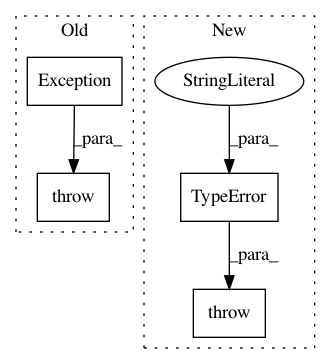

577735597212a111028c2c39db2f621823346ab5,keras/backend/theano_backend.py,,get_value,#Any#,827
Before Change
def get_value(x):
if not hasattr(x, "get_value"):
raise Exception(""get_value() can only be called on a variable. " +
"If you have an expression instead, use eval().")
return x.get_value()
def batch_get_value(xs):
After Change
def get_value(x):
if not hasattr(x, "get_value"):
raise TypeError("get_value() can only be called on a variable. "
"If you have an expression instead, use eval().")
return x.get_value()
def batch_get_value(xs):
In pattern: SUPERPATTERN
Frequency: 4
Non-data size: 4
Instances
Project Name: keras-team/keras
Commit Name: 577735597212a111028c2c39db2f621823346ab5
Time: 2016-12-13
Author: francois.chollet@gmail.com
File Name: keras/backend/theano_backend.py
Class Name:
Method Name: get_value
Project Name: pytorch/pytorch
Commit Name: e87ab2ac4d4f4d208a1dcbc21b584fe59bf18e5f
Time: 2021-03-15
Author: erjia@fb.com
File Name: torch/utils/data/decorator.py
Class Name: functional_datapipe
Method Name: __call__
Project Name: SpiNNakerManchester/sPyNNaker
Commit Name: 7538e4a9962a32f4ebc48aba83cbaf0f1176776f
Time: 2018-03-21
Author: petrut.bogdan@manchester.ac.uk
File Name: spynnaker/pyNN/models/neuron/synapse_dynamics/synapse_dynamics_structural_stdp.py
Class Name: SynapseDynamicsStructuralSTDP
Method Name: __init__
Project Name: keras-team/keras
Commit Name: 0272587c2903d6a0c9bb0b1466db2a01aee36a96
Time: 2016-12-13
Author: francois.chollet@gmail.com
File Name: keras/layers/core.py
Class Name: Lambda
Method Name: from_config